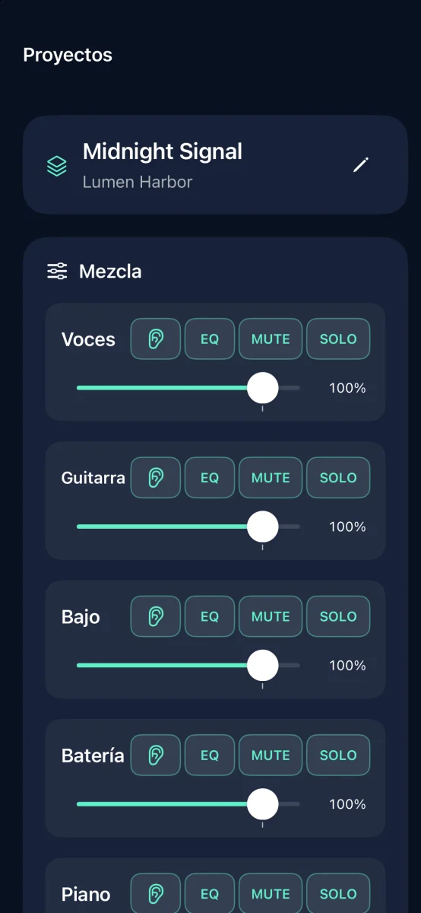
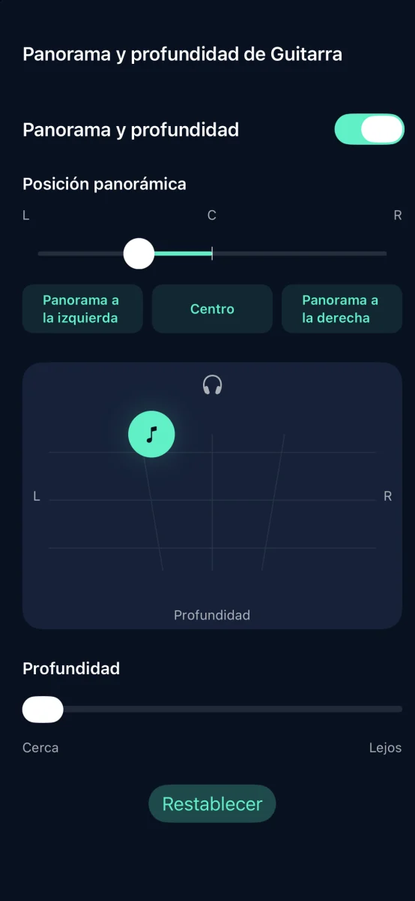
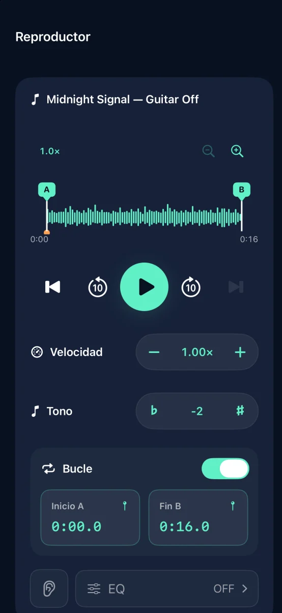

Separación de pistas y práctica musical para iPhone

Convierte tus canciones en pistas de acompañamiento
Separa la canción en seis pistas y silencia la que tú tocas.
Próximamente en el App Store

Funciones



Separación de pistas y práctica musical para iPhone
El audio se separa en tu dispositivo. No necesitas una cuenta.
Ajusta el volumen, silencio, solo, ecualización, panorama y profundidad de cada pista. Exporta en M4A, MP3 o WAV.
Prueba tres separaciones completadas gratis. Una compra única permite separar sin límite. Sin suscripción.
No se pueden importar pistas en streaming ni audio protegido por DRM. Usa audio que tengas derecho a utilizar.
Ayuda y soporte ↗